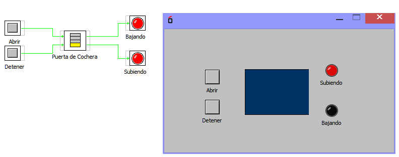

Este bloque emula la apertura y cierre de una puerta vertical.
Pose de Entradas:
Abrir: Abre la puerta
Detener: Deteniene el funcionamiento simulando alarma
Las Salidas son:
bajando: indica que la puerta baja
subiendo: indica que la puerta sube
Ejemplo de funcionamiento básico.
